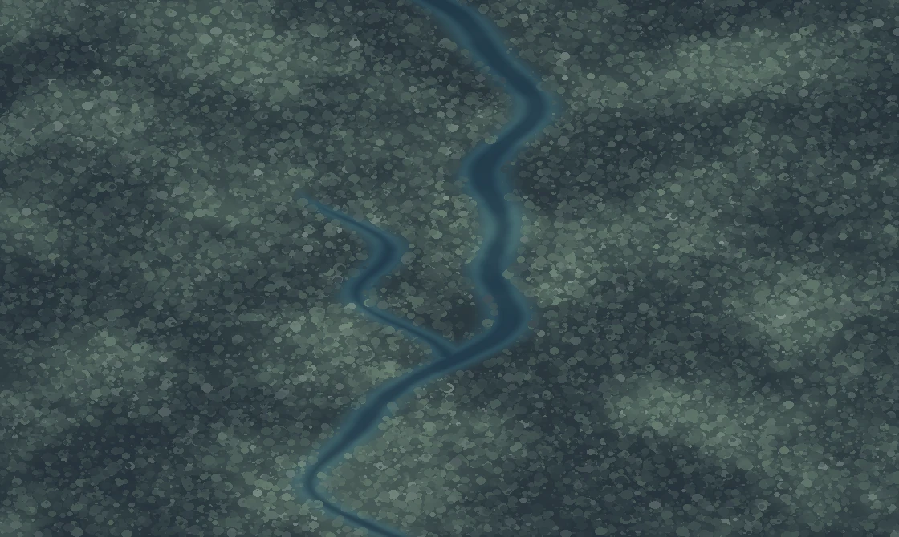
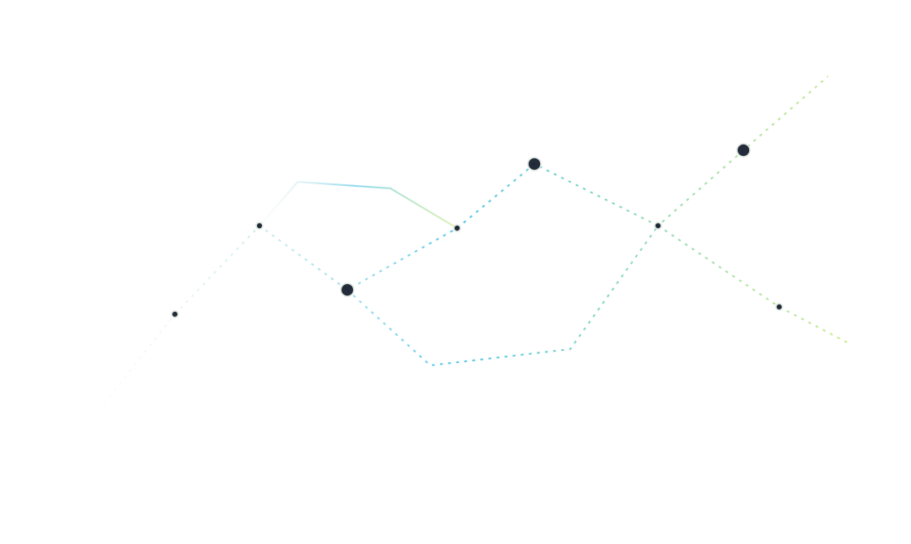

Using business &technology for social &environmental impact.
I work across finance, business strategy and technology—evaluating opportunities, improving business systems and turning complex information into practical decisions. I’m especially interested in applying that work to financial empowerment, renewable energy and more sustainable ways of producing and growing.
My journey into finance began with curiosity. While exploring entrepreneurship and digital businesses, I discovered trading and cryptocurrencies. What started as an interest in financial markets became a fascination with analysis, complexity, and how deeply finance connects to nearly every aspect of a business. That curiosity eventually led me to pursue a degree in Finance and Banking.
My perspective changed while developing La Camelia, a university venture project that became a competition entry. Coming from a family of cattle farmers and having grown up surrounded by Colorado's natural landscapes, I was drawn to the possibility of building businesses that could be financially viable while improving people's livelihoods and respecting the environment. The intersection of finance, science, technology, and human welfare made the challenge all the more fascinating.
Today, I approach problems as interconnected systems. I enjoy breaking them down, understanding how their components interact, and developing solutions that bring the bigger picture into focus. Just as importantly, I enjoy working with people—communicating the story behind the numbers, coordinating ideas, and helping turn a strategy into something tangible.
I'm particularly interested in where finance and technology can create meaningful opportunities, from making financial services more accessible and understandable to advancing clean energy and regenerative production systems.
Work that connects strategy with reality.
From investment-readiness processes to SME financial systems and operational analysis, my experience combines financial judgment with practical execution.
Operational investigation, structured incident reporting, team guidance and recurring-issue analysis.
2022–Present
Independent consulting
Strategic Finance & Technology · Project-based
SME cash-flow and working-capital analysis, financial reporting, and practical process improvement.
2021–2023
SVX Mexico
Product Manager & Investment Analyst
Led the Sustainable Investments Navigator, supported venture assessments and investment readiness, and produced institutional reporting.
2020–2021
SVX Mexico
Fellow · Research & Investor Relations Support
Contributed to financial reviews, research, and early Navigator development.
SVX Mexico
Sustainable Investments Navigator
65ventures entered the evaluation workflow
35received deeper assessments
25vetted ventures published
Ideas into action. Evidence into impact.
Representative work and research, with the analytical question, contribution and stage made explicit. Project details are summarized where original files are confidential.
01 Venture assessment
Sustainable Investments Navigator
Professional project · Completed
Led product development and structured venture-screening processes for SVX Mexico, supporting investment-readiness evaluation and financial decision-making.
Read the approach
The evaluation funnel used questionnaires, spreadsheet calculations and deeper assessments: approximately 65 companies entered, 35 underwent more detailed reviews and 25 vetted ventures were published.
SVX Mexico · Evaluation workflow
65Entered the workflow
35Deeper assessments
25Vetted ventures published


Conceptual research illustration
02 Climate finance research
Carbon-market research in Mexico
Research contribution · Completed
Built Looker dashboards contributing to a USAID-supported study of Mexico's carbon markets, turning research and data into structured analytical reporting.
Read the approach
My contribution focused on dashboard development and analytical reporting. The research was an institutional effort; this portfolio does not reproduce unpublished data or claim sole authorship.
Hypothetical array illustration
03 Independent study
Utility-scale solar investment analysis
Theoretical portfolio exercise · In progress
Developing a hypothetical 100 MWac solar PV case in Sonora to explore project economics, energy assumptions and financial decision-making.
Read the scope
The planned analytical framework covers generation, capital and operating costs, financing, investment returns and sensitivities. A finished model or investment recommendation is not yet published.
Independent initiatives, including a future business-assessment experience, will be connected when their public-facing materials are validated.
Useful references. Useful thinking.
A curated starting point for financial and energy-transition research. External resources belong to their publishers; original models and notes will be published after review.
A place for reviewed financial models, explanatory articles and analytical templates as these become suitable for public release.
Not yet published
Good work begins with a conversation.
I am interested in connecting with people and organizations working at the intersection of finance, business strategy, sustainable investment and the energy transition.
Professional connections · Collaboration · Opportunities
Find me online
Explore my professional background, selected analytical work, or connect through LinkedIn. A dedicated public email address will be added separately.